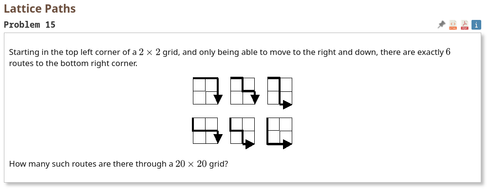

solving it the convoluted way
2026-02-07

why do \(\binom{2n}{n},\) when I can just,
\[\frac{ 2({}^{(n+1)^2 -1}P_{2n+1})
}{({}^{(n+1)^2 -1}C_{2n+1}) (n!(n+1)!)}
\]
>>> import math
...
... def nPr(n, r):
... return math.factorial(n) // math.factorial(n - r)
...
... def nCr(n, r):
... return math.comb(n, r)
...
... def grid_formula(n):
... N = (n + 1)**2 - 1
... r = 2*n + 1
... numerator = 2 * nPr(N, r)
... denominator = nCr(N, r) * math.factorial(n) * math.factorial(n + 1)
... return numerator // denominator
...
... print(grid_formula(19))
...
137846528820
The monster counts all possible permutations of grid vertices and then gets rid of permutations that are identical and normalizes the permutation explosion to fit my needs.
I wanted to solve this using permutations instead of combinations, ended up being more much complicated than I anticipated.